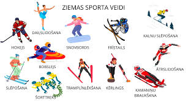

Ziemas sports ir sporta sacensības vai ar sacensībām nesaistītas atpūtas aktivitātes, kas tiek veiktas uz sniega vai ledus. Lielākā daļa no tām ir slēpošanas, slidošanas un braukšanas ar ragaviņām variācijas. Tradicionāli šādas nodarbes tika veiktas tikai aukstā ziemas laikā, bet mākslīgais sniegs un mākslīgais ledus ļāvis pielāgot apstākļus. Aktivitāšu nodarbību vietas un laukumus klāj sniegs vai ledus
